APK瘦身记，如何实现高达53%的压缩效果
来源:非戈 阿里聚安全
我是怎么思考这件事情的
APK是Android系统安装包的文件格式，关于这个话题其实是一个老生常谈的题目，不论是公司内部，还是外部网络，前人前辈已经总结出很多方法和规律。不过随着移动端技术近两年的飞速发展，一些新的思维方式和优化方法也逐渐涌现和成熟起来。笔者在实践过程中踩过一些坑，收获了一些经验，在这里做个思考和总结，所以随笔给大家，希望对大家从事相关工作的时候有所帮助和参考，同时也是抛砖引玉，希望大家共同探讨这个开放性的话题。
关于为什么APK要瘦身，这个不多说，只从三个方面唠叨一下，对于用户（或者客户）来说，APK越大，在下载安装过程中，他们耗费的流量会越多，安装等待时间也会越长；对于产品本身，意味着下载转化率会越低（因为竞品中，用户有更多机会选择那个体验最好，功能最多，性能最好，包最小的）；对于研发来说，是一种优化改进技术的机会。
欲瘦身，我们先找找胖的原因和问题。按目标－路径－资源的思维模式，找原因和问题有如下几条路径，一是拍脑袋，按自己的经验和判断，甚至是主观想象；二是去搜索引擎找关键字，逛各种技术论坛听技术大牛们怎么说，看各类技术文章抽取提炼；三是用一种可测量的工具或者方法发现问题。
前两种不赘述，我这里说说第三种方法。用一种可测量的工具或者方法来分析，所谓工欲善其事，必先利其器。这个器可以可以自己锻造，也可以用现成的。这里推荐一个在线apk分析工具，因为是外部工具，所以大家请在使用过程中，不要上传未发布出去的产品，为了数据安全，笔者这里拿一个github上开源的Android项目作为瘦身示例。
寻找问题
NimbleDroid 是美国哥伦比亚大学的博士创业团队研发出来的分析Android app性能指标的系统，分析的方式有静态和动态两种方式，其中静态分析可以分析出APK安装包中大文件排行榜，各种知名SDK的大小以及占代码整体的比例，各种类型文件的大小以及占排行，各种知名SDK的方法数以及占所有dex中方法数的比例，废话不多说，下面上高清无码大图看看颜值吧。
如果想使用分析功能分析自己的产品，请登录并上传自己产品的apk包，所有功能目前均免费使用，如果是想分析Google Play上已经发布的产品，可以直接点击"Play Apps"查看，还可以使用搜索功能根据应用名和包名查看结果。再次强调下，请不要上传任何未发布的产品。
- 登录
- 上传apk文件
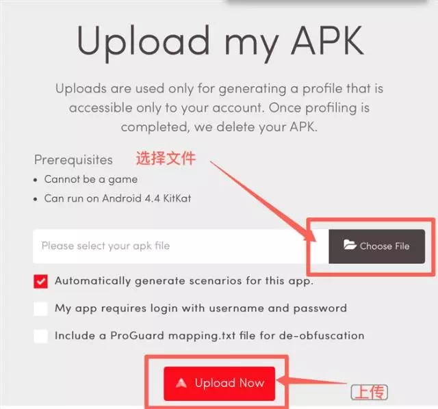
- 分析结果摘要，可以看到一些概览的信息，apk文件大小，总的方法数

- 文件大小分析详情页，大文件列表，这里列出的是apk文件中超过100k的文件排行，这里的文件大小指的是apk文件中的大小
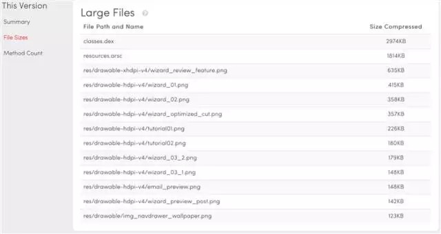
- 各种知名SDK的大小以及占代码整体的比例，这里目前能识别出Android Support，Jackson JSON parser, Google Play Services, Paypal, Glide, OkHttp, Facebook SDK, Fabric, Gson等等，Application表示App中自己编写的代码部分
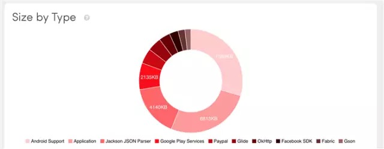
- 各种类型文件的大小以及排行
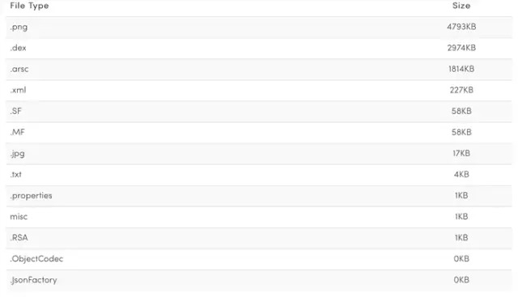
- 各种知名SDK占所有dex中方法数的比例
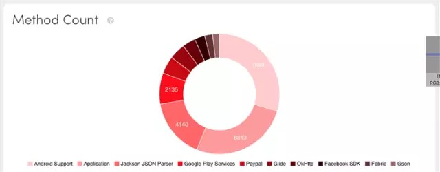
- 各种知名SDK的方法数排行榜
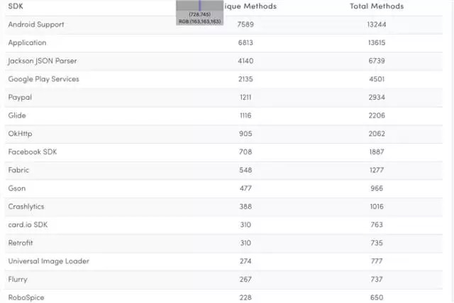
看完这个apk内剖图是不是有一种神清气爽的感觉！我把这个分析工具比做我们家买的智能体重秤，可以称体重，脂肪含量，骨重，骨密度，肌肉含量等等，那么，我们是不是发现了一些问题，进而把这些问题和我们之前靠经验和一拍脑袋的原因可以用逻辑联系在一起。
那么，我们接下来可以通过分析数据整理出我们的优化目标
- 1、大文件排行榜里，有11张png文件的大小超过了100k，记住，这可是压缩之后的啊
- 2、大文件排行榜里，resources.arsc的大小接近2M，这也是一个优化点；
- 3、大文件排行榜里，classes.dex接近3M，classes.dex是代码的载体，这块的优化需要细分，再去看看细分SDK的排行榜；
- 4、组件占比环图里，Android Support, Jackson JSON Parser和Google Play Services是三方库的前三甲；
- 5、文件类型排行榜里，png, dex 和arsc是前三甲；
梳理优化目标
所以我们的目标是没有蛀牙，不对，是下面的目标：
- 1、png图片优化；
- 2、resources.arsc文件的优化；
- 3、代码优化
3.1 图片优化的尝试
首先是第一个目标，图片的优化，慢点，我们看看这些图为什么这么大先，准确的说，为什么这些图在apk（其实就是zip文件）里这么大，好了，上工具分析。
- 这次用了一些简单的工具组合，系统自带的cmd就好。

- 命令执行的结果如下
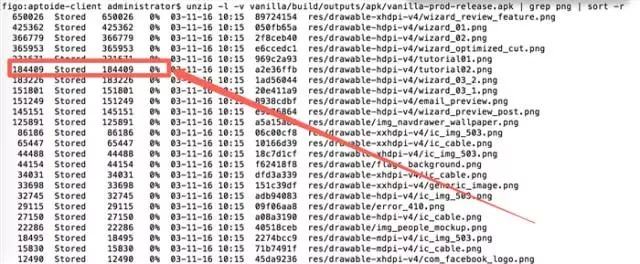
恩，所有的png文件居然是STORE的方式存储到apk里的，关于zip里的STORE和DEFLATE，详见 )
通俗的说，当文件是STORED的方式存储到zip，表示这个文件并没有经过压缩，如果是Defl:N的方式，表示通过DEFLATED normal的方式压缩存储到zip。
这看起来有点不合理，png原封不动的放入zip，当然最后产出的apk会比较大。那么，如何解决呢？笔者首先尝使用android gradle plugin的方式，发现aaptOptions和packagingOptions都未能解决问题。在github上发现一个开源项目AndResGuard，试了集成到项目中，再看结果如下：
- 优化前：
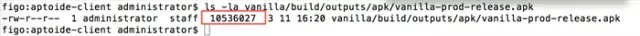
10536027字节
- 优化后：
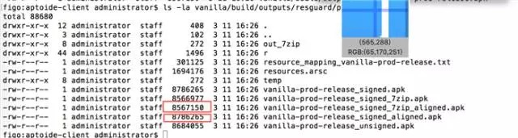
普通zip压缩： 8786265字节 （压缩了将近17%）
采用7zip压缩：8567150字节 （压缩了将近19%）
再看看这个工具做了什么，对比下开启资源混淆前后
- 优化前
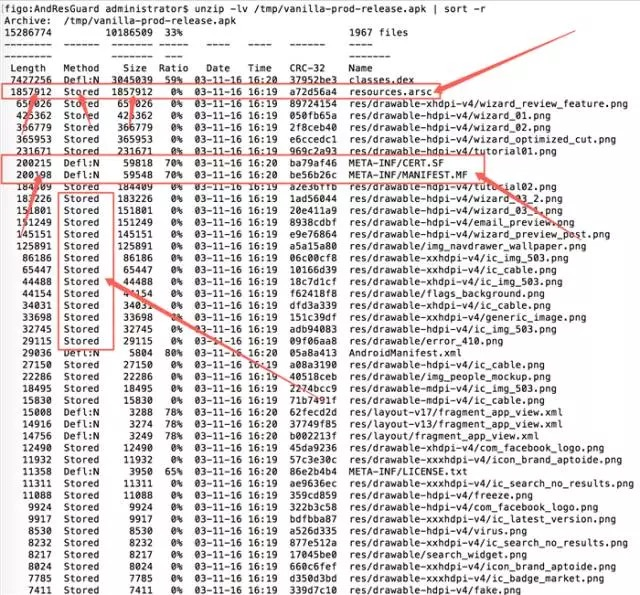
- 优化后
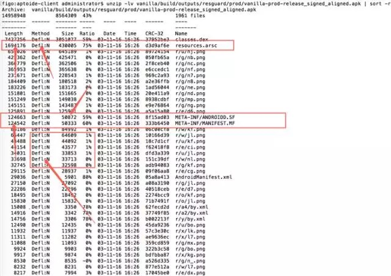
- 1、资源（png, xml, jpg等）名称混淆，资源路径名称混淆以及名称长度压缩；
- 2、原来以STORED形式存储到zip中的png文件被改成了DEFLATED（普通压缩存储）方式；
- 3、意外发现resources.arsc, META-INF/.SF 以及 META-INF/.MF变小了，而且是解压之后的文件大小也变小了。
用apk反编译神器jadx内窥apk寻找真相
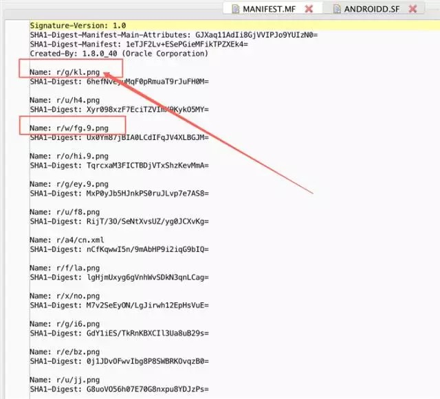
原来apk中资源（png, xml，以及properties文件）的相对路径会存放到META-INF/.SF 以及META-INF/.MF中并为每个资源文件计算SHA1值并存储在这两个文件中，至于为啥这么做以及这两个SHA1有啥区别和作用请参考网络上关于这方面知识的文章，已超出本文的主题所以这里不再赘述。
- 对于resources.arsc文件
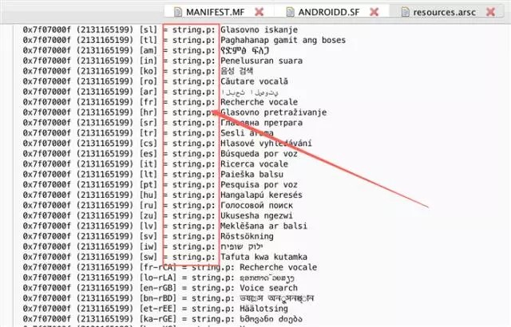
很容易看出来它是资源文件索引表，所以，看到这里大家应该明白这三个文件为啥会变小了吧。
3.2一次意外的发现
- 顺着resources.arsc往下看，发现一个有趣的东西，
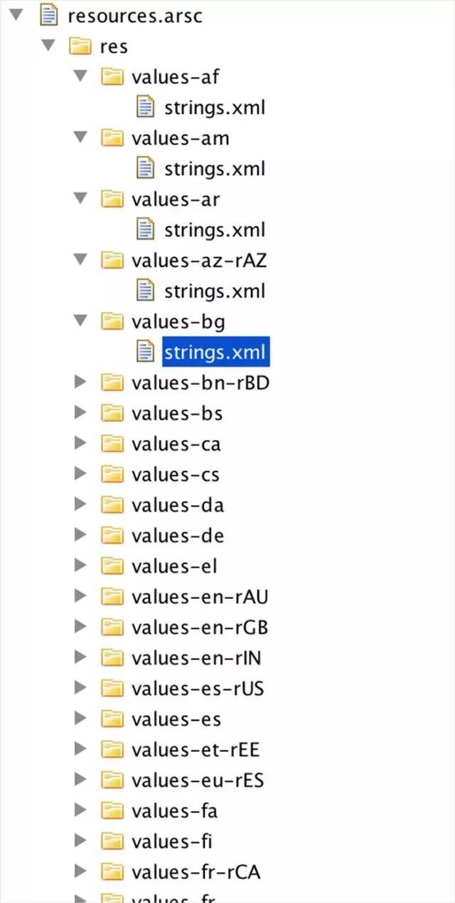
这又将成为一个优化点，去除那些没用的翻译资源，引入一些第三方的SDK，往往这些SDK带了很多翻译资源在里面，比如android support库，去掉后我们来看看效果。
假设我们只保留英文，当然只是个实验，现实中看具体情况了，
采用7zip压缩：8220738字节 （压缩了将近22%，再增加3个点）
当然，真实的项目里不可能这样，但是蚊子肉也是肉啊！
其实，我想说的是这提供了一种优化思路，就是利用gradle的配置干掉无用的资源，同样的可以用在so本地库上，分辨率（gradle配置已deprecated）上。
- gradle配置示例如下：
记得包在android{}中间哦。那么，有人要问了，abi里肿么没有x86？据说intel提供了一个解决方案叫houdini，是一个运行在x86设备上的中间件，可以将arm转码为x86的指令，不过效率很低，有些运算型的，比如计算MD5和SHA1，甚至不如java，笔者曾经做过测试对比，又是另外一个话题，此处不赘述，感兴趣的读者可以移步。
到此为止，我们已经在朝第一个目标迈进，不经意间发现了第一个目标和第二个目标之间的关系，所以利用资源混淆工具，达成了第二个目标。
利用7zip压缩，我们对整个包进行了2个点的压缩，这是一个超出预期的成果。
3.3图片优化的方法
关于第一个目标，我们的路径还没有结束，拍脑袋想出来的路径是压缩png，非alpha图转成jpg，还有什么？所以去各种技术论坛逛了一圈，请教了各种技术大牛，梳理的路径如下：
1、手动lint检查，手动删除代码中没有引用到的资源，实际效果不等。
在Android Studio中打开“Analyze” 然后选择"Inspect Code..."，范围选择整个项目，然后点击"OK"
- 配置如下图
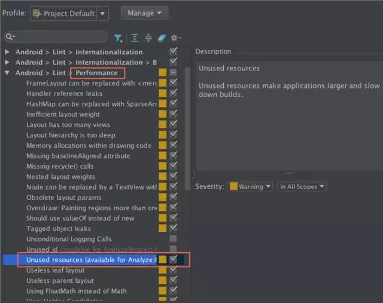
2、gradle脚本中开启shrinkResources
- 脚本参考如下
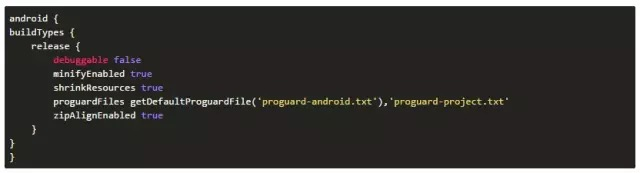
shrinkResources配合minifyEnabled使用效果更佳，详见shrinkResources用法以及注意
采用7zip压缩：8115283字节 （压缩了将近23%，再增加1个点）
3、使用图片压缩工具，压缩png图的大小，将非alpha的图转换成jpg形式，关于这点同事以及网络上的大牛们已经整理的很详细了，我这里做简单总结，欲知详情，请见附录的参考。
- 使用tinypng，我只想说咱们在公司做产品，此方案慎用，上传任何未发布产品的内容到外部网络，都有可能引起数据泄漏，所以慎用此方案。下面说替代方案。
- WASTED
- pngquant
- ImageAlpha
- ImageOptim
- 以上工具太散，有没有集成化的工具，答案是“有”，@心伦 童鞋开发的imagemin
- @姐夫童鞋开发的MSImageResourcesHelper
- png转成jpg格式 具体效果不等。
4、终极大杀器，png转成webp，关于webp，更多详情请参考谷歌官方文档以及安卓开发者在线参考
- 先上效果图：
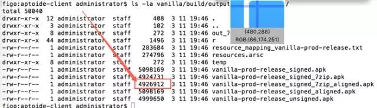
采用7zip压缩：4926912字节 （压缩了将近53%，再增加30个点）
没看错吧，是30个点，目前apk的大小是原始apk大小的一半不到，而我做的，一行代码木有改动，仅用了一些工具而已！
说人话，我木有吃减肥药，木有绝食，体重却轻了一半！！！
但是，目前却没能用到项目中，因为有两个坑
- 在三星的部分机型上，部分有alpha背景部分的图会有一条很明显的黑线，这里就不上图了，这个问题目前通过白名单的方式不去做成webp的图来处理；
- 在小米2刷成4.xx的手机上，未能正确识别xml文件中描述的webp图片，导致界面起来后加载xml布局文件，文件加载webp失败，报错说resource file not found，导致app发生崩溃。跟踪发现是小米机器代理了类Resource为MIUIResource，但是这个MIUIResource未能正确识别webp，所以导致加载资源文件失败，初步判定，目前暂时没有解决方案，所以只能忍痛放弃这个优化方案。
关于第一个目标，图片资源的优化，就写到这里了。
3.4代码优化
第二个目标已达成，剩下第三个目标，代码的优化，梳理如下优化路径：
- 1、开启proguard的代码优化：将proguardFiles getDefaultProguardFile('proguard-android.txt'),'proguard-project.txt 改为 proguardFiles getDefaultProguardFile('proguard-android-optimize.txt'),'proguard-project.txt' 开启代码优化后的注意点请参见附录。
- 2、去除无用的库：如果apk支持的最低版本是API14,而代码中没有用到高于api14的api就可以考虑拿掉整个android support库。
- 3、用更小的库替代方案：如果只用到了谷歌统计，那么就不要把整个google play services都集成进来，只集成需要的部分。
- 4、定期清理废弃的代码：定期删除无用的逻辑和过期的业务功能模块，以及废弃的A/B test代码。
- 5、业务模块采用插件化框架，代码动态从云端拉取
插件化，这是另外一个课题了，这里不赘述。
apk瘦身记最终的成果
10536027字节压缩到4926912字节, 压缩了将近53%
总结
- 1.脚本中开启资源混淆和资源压缩
- 2.用7zip代替zip
- 3.gradle脚本中开启代码混淆优化和无用资源删除
- 4.用更小的图，使用压缩工具压缩图片大小
- 5.去除无用的资源，语言，本地so库，二方三方库和分辨率
- 6.用更小的库
- 7.尝试将android support库彻底踢出你的项目
- 8.定期清理代码
- 9.尝试用H5编写界面，图片云端获取
- 10.尝试插件化业务模块
- 11.寻找到zip文件夹中所有用STORE形式存储的文件（不限于raw目录下），尝试压缩，以及替代方案加载这些资源
- 12.尝试webp的图片加载方案，寻求突破
最后，继续学习和尝试新的优化方案
以此文献给“唯瘦身与产品不可辜负”的技术们！！！